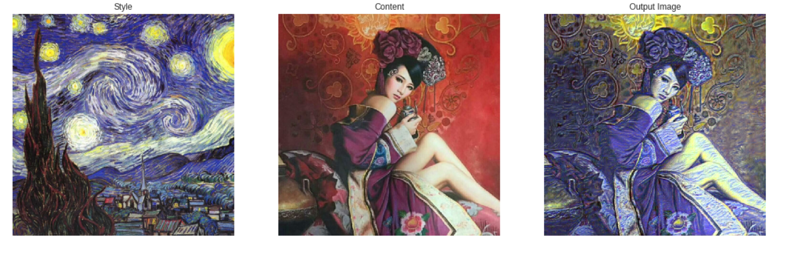
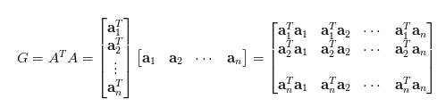
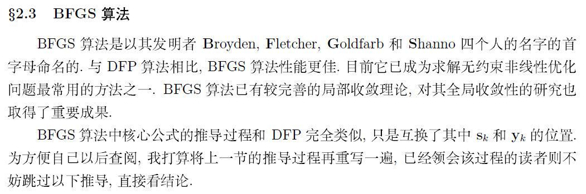

Purdue机器学习入门（四）画风迁移
文章目录

Author: Alexis Jacq
Edited by: Winston Herring
基本原则（Underlying Principle）
定义两个距离，一个用于内容（$ D_C $），一个用于样式$ D_S $）。 $ D_C $测量两个图像之间内容的差异，$ D_S $测量两个图像之间的样式的差异。 新建第三个图像对其进行变换，尽量减小其与内容图像的内容距离和与样式图像的样式距离。
先看结果：

代码第一段，自行更改style.jpg和content.jpg文件
1 2 3 4 5 6 7 8 9 10 11 12 13 14 15 16 17 18 19 20 21 22 23 24 25 26 27 28 29 30 31 32 33 34 35 36 37 38 39 40 41 42 43 44 45 46 47 48 49 50 51 52 53 54 55 |
from __future__ import print_function
# 用于Jupyter
%matplotlib inline
import torch
import torch.nn as nn
import torch.nn.functional as F
import torch.optim as optim
from PIL import Image
import matplotlib.pyplot as plt
import torchvision.transforms as transforms
import torchvision.models as models
import copy
import time
T0=0
device = torch.device("cuda:0" if torch.cuda.is_available() else "cpu")
imsize = 768 if torch.cuda.is_available() else 128 # 根据机器合理选择
loader = transforms.Compose([
transforms.Resize(imsize),
transforms.ToTensor()])
def image_loader(image_name):
image = Image.open(image_name)
# 单张图片变tensor的dataloader方法
image = loader(image).unsqueeze(0)
return image.to(device, torch.float)
style_img = image_loader("style.jpg")
content_img = image_loader("content.jpg")
assert style_img.size() == content_img.size(), \
"图片最好是正方形"
unloader = transforms.ToPILImage() # tensor 转为 PIL image
plt.ion()
def imshow(tensor, title=None):
image = tensor.cpu().clone()
image = image.squeeze(0) # 降维
image = unloader(image)
plt.imshow(image)
if title is not None:
plt.title(title)
# plt.pause(0.001) # Jupyter不需要，其它可能需要
ax = plt.subplot(1, 2, 1)
ax.axis('off')
imshow(style_img, title='Style')
ax = plt.subplot(1, 2, 2)
ax.axis('off')
imshow(content_img, title='Content') |
损失函数（Loss Functions）
内容损失就是我们常用的mse损失，关键是风格损失是什么？数学家们告诉我们要使用Gram矩阵，下面引用知乎上的关于Gram矩阵的简介：
Gram Matrix实际上可看做是feature之间的偏心协方差矩阵（即没有减去均值的协方差矩阵），在feature map中，每一个数字都来自于一个特定滤波器在特定位置的卷积，因此每个数字就代表一个特征的强度，而Gram计算的实际上是两两特征之间的相关性，哪两个特征是同时出现的，哪两个是此消彼长的等等，同时，Gram的对角线元素，还体现了每个特征在图像中出现的量，因此，Gram有助于把握整个图像的大体风格。有了表示风格的Gram Matrix，要度量两个图像风格的差异，只需比较他们Gram Matrix的差异即可。

因此风格损失就是Gram损失。
1 2 3 4 5 6 7 8 9 10 11 12 13 14 15 16 17 18 19 20 21 22 23 24 25 26 27 28 29 30 31 32 33 34 35 36 37 38 |
class ContentLoss(nn.Module):
def __init__(self, target,):
super(ContentLoss, self).__init__()
# we 'detach' the target content from the tree used
# to dynamically compute the gradient: this is a stated value,
# not a variable. Otherwise the forward method of the criterion
# will throw an error.
self.target = target.detach()
def forward(self, input):
self.loss = F.mse_loss(input, self.target)
return input
def gram_matrix(input):
a, b, c, d = input.size()
# a=batch size(=1)
# b=特征数
# (c,d)=特征 map (N=c*d)
features = input.view(a * b, c * d) # resise F_XL into \hat F_XL
G = torch.mm(features, features.t()) # Gram矩阵=特征矩阵乘以其转置
# torch.mm(mat1, mat2, out=None) → Tensor 矩阵乘法非点乘
# 通过除以特征map的全部数目来归一化
return G.div(a * b * c * d)
class StyleLoss(nn.Module):
def __init__(self, target_feature):
super(StyleLoss, self).__init__()
self.target = gram_matrix(target_feature).detach()
def forward(self, input):
G = gram_matrix(input)
self.loss = F.mse_loss(G, self.target)
return input |
迁移模型（采用vgg Model）
1 2 3 4 5 6 7 8 9 10 11 12 13 14 15 16 17 18 19 20 21 22 23 24 25 26 27 28 29 30 31 32 33 34 35 36 37 38 39 40 41 42 43 44 45 46 47 48 49 50 51 52 53 54 55 56 57 58 59 60 61 62 63 64 65 66 67 68 69 70 71 72 73 74 75 76 77 78 79 80 81 82 83 84 85 86 87 |
cnn = models.vgg19(pretrained=True).features.to(device).eval()
cnn_normalization_mean = torch.tensor([0.485, 0.456, 0.406]).to(device)
cnn_normalization_std = torch.tensor([0.229, 0.224, 0.225]).to(device)
# 创建模型并归一化数据，类似dataloader导入
class Normalization(nn.Module):
def __init__(self, mean, std):
super(Normalization, self).__init__()
# [C x 1 x 1] 转为tensor [B x C x H x W].
# B - batchsize， C - channels， H - height ， W - width.
self.mean = torch.tensor(mean).view(-1, 1, 1)
self.std = torch.tensor(std).view(-1, 1, 1)
def forward(self, img):
# 255->1
return (img - self.mean) / self.std
# 创建模型
content_layers_default = ['conv_4']
style_layers_default = ['conv_1', 'conv_2', 'conv_3', 'conv_4', 'conv_5']
def get_style_model_and_losses(cnn, normalization_mean, normalization_std,
style_img, content_img,
content_layers=content_layers_default,
style_layers=style_layers_default):
cnn = copy.deepcopy(cnn)
# 导入数据
normalization = Normalization(normalization_mean, normalization_std).to(device)
# 迭代器
content_losses = []
style_losses = []
# 生成新的 nn.Sequential
model = nn.Sequential(normalization)
i = 0
for layer in cnn.children():
if isinstance(layer, nn.Conv2d):
i += 1
name = 'conv_{}'.format(i)
elif isinstance(layer, nn.ReLU):
name = 'relu_{}'.format(i)
#更改原始模型，以适应新环境，迁移学习
layer = nn.ReLU(inplace=False)
elif isinstance(layer, nn.MaxPool2d):
name = 'pool_{}'.format(i)
elif isinstance(layer, nn.BatchNorm2d):
name = 'bn_{}'.format(i)
else:
raise RuntimeError('Unrecognized layer: {}'.format(layer.__class__.__name__))
model.add_module(name, layer)
if name in content_layers:
# 增加 content loss:
target = model(content_img).detach()
content_loss = ContentLoss(target)
model.add_module("content_loss_{}".format(i), content_loss)
content_losses.append(content_loss)
if name in style_layers:
# 增加 style loss:
target_feature = model(style_img).detach()
style_loss = StyleLoss(target_feature)
model.add_module("style_loss_{}".format(i), style_loss)
style_losses.append(style_loss)
# 改变
for i in range(len(model) - 1, -1, -1):
if isinstance(model[i], ContentLoss) or isinstance(model[i], StyleLoss):
break
model = model[:(i + 1)]
return model, style_losses, content_losses
# 生成一幅新图画，既有content的内容，又有style的风格，可以以content为基础，也可以以随机图为基础。
input_img = content_img.clone()
# 随机白噪声图
# input_img = torch.randn(content_img.data.size(), device=device)
plt.figure()
plt.axis('off')
imshow(input_img, title='Input Image') |
优化算法（Gradient Descent）
采用这种优化器：L-BFGS optimizer optim.LBFGS

1 2 3 4 |
def get_input_optimizer(input_img):
# 要求梯度的输入
optimizer = optim.LBFGS([input_img.requires_grad_()])
return optimizer |
最后，我们必须定义一个执行神经传递的函数。对于网络的每次迭代，它被馈送更新的输入并计算新的损失。我们将运行backward每个损耗模块的方法来动态计算它们的梯度。优化器需要一个“closure”函数，它重新评估模块并返回损失。
我们还有一个最后的约束要解决。网络可以尝试使用超过图像的0到1张量范围的值来优化输入。我们可以通过在每次运行网络时将输入值更正为0到1来解决此问题。
1 2 3 4 5 6 7 8 9 10 11 12 13 14 15 16 17 18 19 20 21 22 23 24 25 26 27 28 29 30 31 32 33 34 35 36 37 38 39 40 41 42 43 44 45 46 47 48 |
def run_style_transfer(cnn, normalization_mean, normalization_std,
content_img, style_img, input_img, num_steps=300,
style_weight=1000000, content_weight=1):
"""Run the style transfer."""
print('Building the style transfer model..')
model, style_losses, content_losses = get_style_model_and_losses(cnn,
normalization_mean, normalization_std, style_img, content_img)
optimizer = get_input_optimizer(input_img)
print(model)
print('Optimizing..')
run = [0]
while run[0] <= num_steps:
def closure():
# correct the values of updated input image
input_img.data.clamp_(0, 1)
optimizer.zero_grad()
model(input_img)
style_score = 0
content_score = 0
for sl in style_losses:
style_score += sl.loss
for cl in content_losses:
content_score += cl.loss
style_score *= style_weight
content_score *= content_weight
loss = style_score + content_score
loss.backward()
run[0] += 1
if run[0] % 50 == 0:
print("run {}:".format(run))
print('Style Loss : {:4f} Content Loss: {:4f}'.format(
style_score.item(), content_score.item()))
print()
return style_score + content_score
optimizer.step(closure)
# a last correction...
input_img.data.clamp_(0, 1)
return input_img |
运行算法（Run the algorithm）
1 2 3 |
output = run_style_transfer(cnn, cnn_normalization_mean, cnn_normalization_std,
content_img, style_img, input_img)
print('用时:','{:.2f}'.format(time.clock() - T0),'s') |
图像显示结果
1 2 3 4 5 6 7 8 9 10 11 12 13 14 15 16 17 18 19 |
plt.figure(figsize=(19,19),edgecolor='r',frameon=True) #指定图像显示大小，单位inch
ax = plt.subplot(1, 3, 1)# 1行3列第1副图
ax.axis('off')
imshow(style_img, title='Style')
ax = plt.subplot(1, 3, 2)
ax.axis('off')
imshow(content_img, title='Content')
ax = plt.subplot(1,3, 3)
ax.axis('off')
imshow(output, title='Output')
plt.ioff()
plt.show()
# tensor格式图像存储
import torchvision
torchvision.utils.save_image(output, 'out.jpg', nrow=8, padding=2, normalize=False, range=None, scale_each=False, pad_value=0) |
文章作者 Jeff Liu
上次更新 2019-02-08